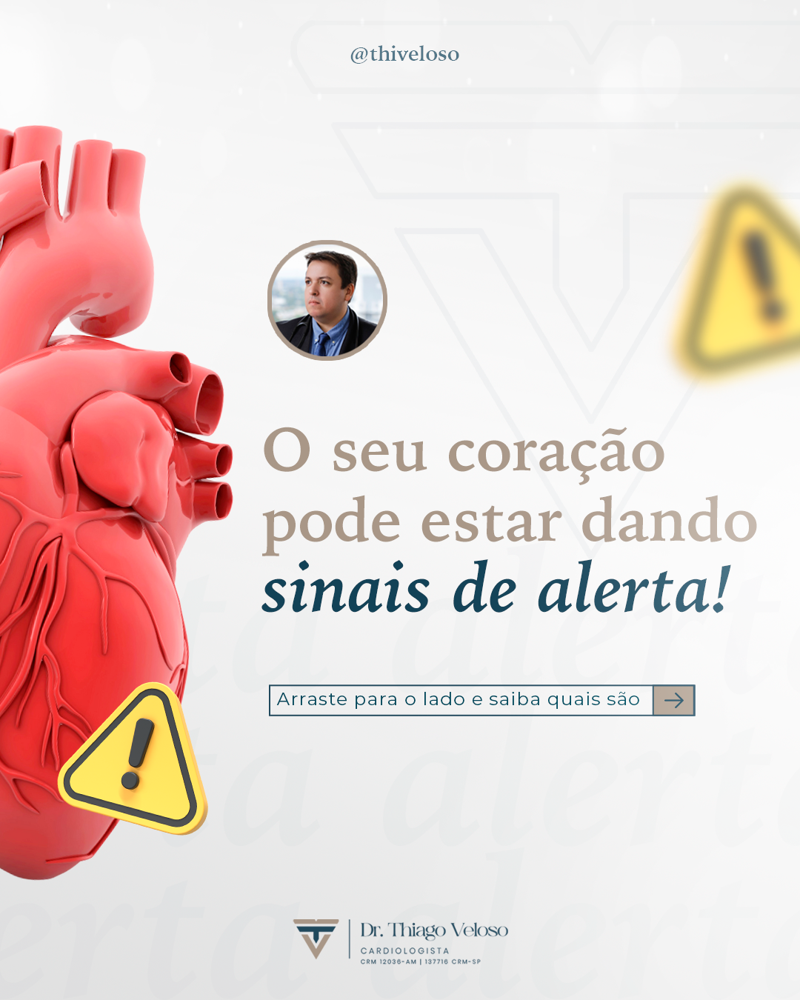
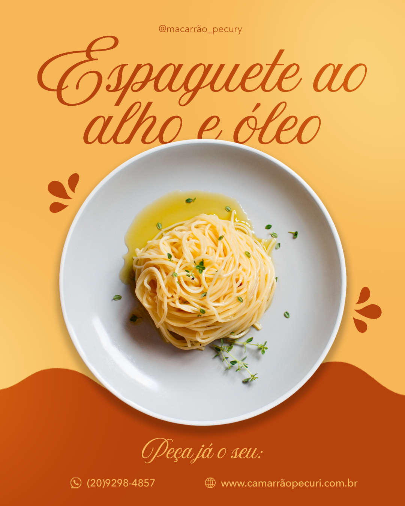

Primeiramente, deixa eu me apresentar. Me chamo Jéssica, tenho 22 anos e nasci na cidade de Caçador, mas vim para Florianópolis quando tinha menos de um ano de idade.
Em 2023 comecei minha jornada na área de tecnologia sem saber muito bem qual caminho eu ia querer. Na época, estudei QA na Alura, passando por planos de testes, automação com Cypress e até banco de dados com MySQL. Foi uma fase de descobertas e, mesmo gostando, eu ainda sentia que faltava algo.
Logo depois, percebi que sempre tive uma ligação forte com o visual. Já tinha feito algumas artes para a empresa do meu pai e, lembrando disso, resolvi pesquisar mais sobre o design, foi nesse período que descobir o design gráfico (que até então eu nem conhecia). Cemecei fazendo alguns trabalhos práticos em casa e decici que era isso que queria fazer,foi aí que decidi entrar na faculdade de Design Gráfico em 2023. Durante a faculdade tive dois estágios: no primeiro trabalhei bastante com roteiros e edição de vídeos, além de tratamento de imagens; no segundo, mergulhei no design para redes sociais e criei muitas artes para impressos e eventos. Essas experiências me deram muita prática e reforçaram meu lado criativo e visual.
Depois de sair do último estágio, decidi arriscar em algo meu e criei a Lazuli Tecnologia, uma empresa focada em criação de cenários para fotos de produtos usando inteligência artificial. Foi um desafio enorme, porque precisei aprender sobre marketing, tráfego pago, captação de clientes e precisei desenvolver toda a parte da identidade visual da empresa. Foi corrido, mas aprendi muito, inclusive coisas que nunca imaginei que iria ter que estudar.
Com o tempo, percebi que eu queria ir além do visual. Sempre gostei de estética, mas sentia que o design gráfico me deixava um pouco limitada. Foi aí que conheci o front-end. Esse pensamento surgiu pois sempre que eu fazia alguma alteração no protótipo no site da lazuli, eu precisa pedir para meu namorado fazer para mim. Então pensei, se eu gosto da parte de programação, tenho curiosidade de saber como funciona e tenho tempo para aprender, por que não começar a estudar sobre front-end? Então comecei a estudar,e simplesmente me apaixonei. É muito gratificante você estudar algo que sempre teve admiração e ver que está evoluindo e conseguindo aprender.
Atualmente estou estudando HTML, CSS e flexbox. Assim que sentir que dominei bem a prática, pretendo iniciar meus estudos em JavaScript.
Estou na reta final da minha graduação em Design Gráfico e já me preparando para começar a faculdade de Análise e Desenvolvimento de Sistemas, pois quero me aprofundar cada vez mais nessa área. Me vejo nessa transição entre design e desenvolvimento, explorando o melhor dos dois mundos: criar projetos que sejam bonitos, intuitivos e completos.
E este portfólio que você está navegando é o meu primeiro projeto desenvolvido com código, usando HTML, CSS e Flexbox. Espero que gostem e que aqui vocês possam ter conhecido um pouco da minha jornada e do meu crescimento nessa área. 💙 ✨
Meus projetos
Esses são alguns dos projetos que já realizei, explorando diferentes áreas e estilos de design. Cada um traz um pedacinho da minha trajetória e das minhas experiências.
Para conhecer meu portfólio de design, clique aqui ✨
DMA Gestão e Marketing
Projetos pessoais
Habilidades (Skills)
Aqui estão as ferramentas e tecnologias que utilizo no meu dia a dia, tanto no design quanto no desenvolvimento front-end. Algumas delas já fazem parte da minha rotina há bastante tempo, outras estou aprofundando agora com foco na transição para o Front-end.
Design
- Photoshop
- Canva
- Figma
- Premiere
Front-end
- HTML
- CSS
- JavaScript
- Git e GitHub
Outros conhecimentos
- Planejamento de testes de software
- Automação com Cypress
- Banco de dados MySQL
- Marketing digital e tráfego pago
Minhas experiências
-
Projetos pessoais (2023-2024)
-
Estágio em Design Gráfico – Digital Design (2024)
-
Estágio em Design Gráfico – DMA Gestão e Marketing (2024-2025)
-
Co-Fundadora da Lazuli Tecnologia (2025)
Produzi diversas artes visuais em tempo livre para explorar paletas, tipografias e composições. Atualmente, estou aplicando meus estudos em front-end no desenvolvimento do meu primeiro projeto: meu portfólio em HTML e CSS, unindo minha experiência do design com código.
Durante esse estágio tive contato com diversas áreas do design: criação de roteiros para vídeos, edição de vídeos e tratamento de imagens. Também desenvolvi bastante atenção a detalhes de ortografia, pesquisas de referência e geração de ideias de conteúdo. Essa experiência foi essencial para fortalecer minha visão criativa e minha organização na hora de entregar materiais de qualidade.
Trabalhei intensamente na criação de artes para redes sociais, além de desenvolver materiais para impressão, newsletters e edições básicas de vídeo. Também atuei com tratamento de imagens e contribui trazendo ideias e referências criativas para as peças. Essa experiência me deu bastante prática em comunicação digital e adaptação de conteúdos para diferentes mídias.
Criei a Lazuli Tecnologia, uma empresa voltada para criação de cenários de produtos com inteligência artificial. Fui responsável por toda a identidade visual, logotipo, artes para redes sociais e padrões de layout. Além disso, aprendi e atuei em áreas como marketing digital, tráfego pago e captação de clientes. Essa experiência ampliou minha visão sobre design, negócios, tecnologia e empreendedorismo.
Se quiser conhecer o Instagram da Lazuli, clique aqui ✨
Contatos
Estou sempre aberta a novas oportunidades, colaborações e trocas de ideias. Se quiser conversar sobre um projeto, estágio ou parceria, é só me chamar!
- Email:jessicavoitilaki.f@gmail.com
- LinkedIn: Acessar aqui
- Behance: Acessar aqui
- GitHub: Acessar aqui